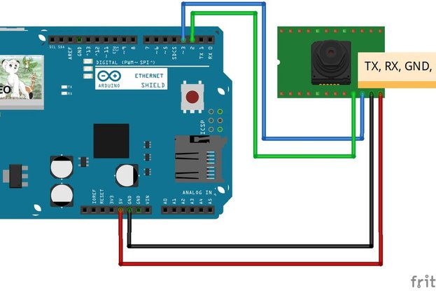

I will introduce a Arduino ethernet Camera. You can take a picture inside of house which have a this arduino ethernet camera by just openning the web site if you follow this contents. It is very easy and simple way which don't need any app. for smart phone. Let's start.
Parts Needed
- (1) Arduino Uno
- (1) Arduino Ethernet Shield
- (1) Serial Camera
Project Diagram
Prepare for Software : Library
- You can download libraries in http://arduino.cc
- Adafruit_VC0706.h (for TTL Camera)
- SdFat.h (for SD card)
- SdFatUtil.h (for SD card)
- Ethernet.h (for Ethernet shield , default installed in Sketch)
- SoftwareSerial.h(for TTL Camera)